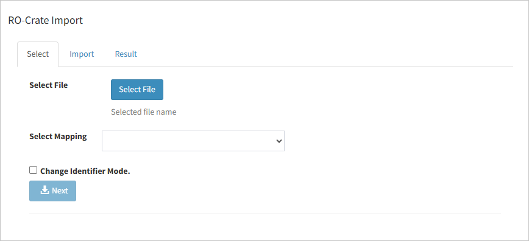
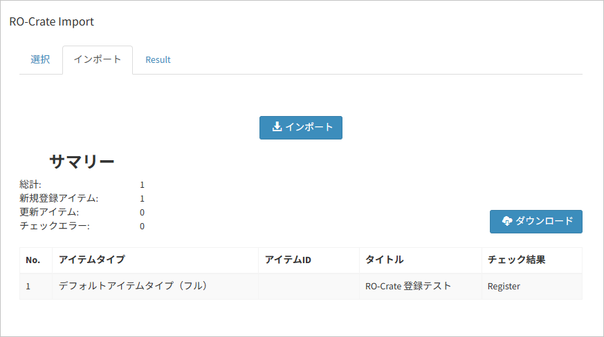
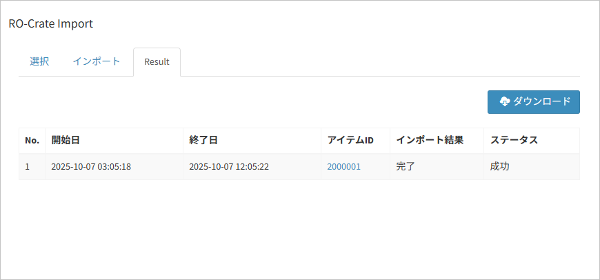

RO-Crate インポート
目的・用途
本機能は、管理者として、RO-Crate+BagItファイルをインポートし、データを登録する機能である。
利用方法
管理者は 【Administration > アイテム管理（Items） > RO-Crate インポート（RO-Crate Import）】を開き、アイテム登録用のRO-Crate+BagItファイルを登録する。
利用可能なロール
| ロール | システム管理者 | リポジトリ管理者 | コミュニティ管理者 | 登録ユーザー | 一般ユーザー | ゲスト(未ログイン) |
|---|---|---|---|---|---|---|
| 利用可否 | 〇 | 〇 | 〇※ | × | × | × |
※サブリポジトリ管理者は、自身の管理下にあるサブリポジトリに関連付けられたインデックスへのインポートのみ可能
機能内容
- RO-Crate+BagItファイルをインポートし、アイテムを登録する。
- ほとんどの機能はインポート機能と同じだが、使用するメタデータ形式がRO-Crateの
ro-crate-metadata.jsonファイルである点、 登録できるアイテムが1つずつである点が異なる。 - RO-Crate+BagItファイルに含まれる
ro-crate-metadata.jsonファイルを読み込み、アイテムのメタデータへマッピングする。 - WEB APIを利用してメタデータ内に記載されたDOIによるメタデータ補完を提供する。
- アイテムのメタデータをTSVインポートと同様のチェック仕様でバリデーションチェックを行う。
画面仕様
選択画面

RO-Crate+BagItファイルを選択する画面である。
［ファイル選択（Select File）］ボタン
- 押下するとファイル選択ダイアログを表示する。選択可能なファイルはzip形式で1つのみ。
Selected file name ラベル
- 1.で選択したファイル名を表示する。未選択時は「選択したファイル名（Selected file name）」を表示。
マッピング定義セレクター
- アイテムのメタデータをRO-Crateからアイテムタイプへマッピングするためのマッピング定義を選択する。
マッピング定義は、ADMIN_1_5：JSON-LD マッピングで管理者によって定義される。
- アイテムのメタデータをRO-Crateからアイテムタイプへマッピングするためのマッピング定義を選択する。
識別子変更モード（Identifier Change Mode）チェックボックス
- インポート機能の識別子変更モードと同様。
エラーメッセージ
- 選択したファイルに問題がある場合は、画面上部にエラーメッセージを表示する。
インポート画面

インポートするファイルのバリデーションチェックの結果を表示する画面である。
Import ボタン
- 押下するとインポートを実行する。
対象データにエラーがありインポートできない場合は非活性。
- 押下するとインポートを実行する。
Download ボタン
- インポートファイルのチェック結果をTSV形式で出力する。
チェック結果
- インポートするアイテムのアイテムタイプ、アイテムID（更新時）、タイトル、チェック結果を表示する。
結果画面

インポートの結果を表示する画面である。成功した場合は、登録されたアイテムのIDを表示する。
現状、処理中に一度画面を離れた場合、処理はCeleryで管理されて継続するが、画面で進捗状況を再度確認することはできない。
Download ボタン
- インポート処理の実行結果を出力する。
インポート結果
- インポート処理の結果を表示する。成功した場合は、登録されたアイテムのIDを表示する
RO-Crate+BagItファイルの構成
RO-Crate+BagItファイルは、以下の構成である必要がある。
アイテムとして登録するファイルとメタデータを記述した..jsonファイルは、data/ディレクトリに格納される。
参照：Adding RO-Crate to Bagit
./ (bagit root)
├── bagit.txt
├── bag-info.txt
├── data/
│ ├── ro-crate-metadata.json
│ └── <Files>
├── manifest-sha256.txt
└── tagmanifest-sha256.txt
| ファイル or ディレクトリ | 必須 | 詳細 |
|---|---|---|
| bagit.txt | ※ | BagItファイルの宣言 |
| bag-info.txt | Bagに関するメタデータを含むファイル | |
| data/ | ※ | ペイロードディレクトリ。 配下のファイルはマニフェストの妥当性により担保される |
| ro-crate-metadata.json | ◯ | アイテムのメタデータがJSON-LD形式で記述されたファイル |
| manifst-sha256.txt | ※ | data/内の各ファイルのSHA-256チェックサムをまとめたマニフェストファイル |
| tagmanifst-sha256.txt | data/外の各ファイルのSHA-256チェックサムをまとめたタグマニフェストファイル |
ただし、この機能からのインポート時には、data/ ディレクトリ以外は無視する。
※印のファイルは、SWORD APIを利用してアイテムを登録する際にはファイルの検証のため必須になる。
メタデータ記述
RO-Crate 1.1に対応していて、アイテムのメタデータはro-crate-metadata.jsonファイルにJSON-LD形式で記述される。@graphには、アイテムのメタデータを記述するエンティティが配列で格納される。@idは、エンティティの識別子を示し、リンクトデータとしての参照先を示す。
すべてのメタデータは、ルートデータセット（{"@id": "./"}）に記述され、
ここにリンクトデータとしての参照先が指定されていないエンティティは、インポート時にすべて無視される。
また、ルートデータセットを指定するエンティティ（{"@id": "ro0crate-metadata.json"}）が必須である。
{
"@context": "https://w3id.org/ro/crate/1.1/context",
"@graph": [
{
"@id": "ro-crate-metadata.json",
"@type": "CreativeWork",
"about": {
"@id": "./"
},
"conformsTo": {
"@id": "https://w3id.org/ro/crate/1.1"
}
},
{
"@id": "./",
"@type": "Dataset",
"name": "Sample Dataset",
"description": "This is a sample dataset.",
"datePublished": "2025-03-01",
"creator": [ {"@id": "#:creator"} ],
"hasPart": [ {"@id": "data/sample.txt"} ]
},
{
"@id": "#:creator",
"@type": "Person",
"name": "John Doe"
},
{
"@id": "data/sample.txt",
"@type": "File",
"name": "sample.txt"
}
]
}
また、アイテムの含まれるすべてのファイルのメタデータは、hasPartプロパティを使用して指定する。
ここでは、すべてのファイルをdata/ディレクトリ以下の相対パスで表現する。
アイテム分離の場合を除き、ルートデータセット以外のエンティティにhasPartプロパティにファイルを指定しても無視される。
{
"@id": "./",
"hasPart": [
{"@id": "data/sample.txt"},
{"@id": "data/img/sample.jpg"}
]
},
{
"@id": "data/sample.txt",
"@type": "File",
"name": "sample.txt",
"contentSize": "1024 KB" ,
"fileFormat": "text/plain"
},
{
"@id": "data/img/sample.jpg",
"@type": "File",
"name": "sample.jpg",
"contentSize": "2048 MB" ,
"fileFormat": "image/jpeg"
}
カスタム語彙
RO-Crate+BagItファイルに含まれるro-crate-metadata.jsonファイルには、システム向け情報が含まれている。
RO-Crateには、アイテムのメタデータを記述するための語彙が定義されているが、WEKO3のシステム向け情報は表現することができない。
そのため、カスタム語彙を定義して記述されているため、インポート処理においては、これらを解析し、システム向け情報を取得する。
使用語彙
TSV形式のメタデータ項目とシステム向け語彙について、定義したカスタム語彙を以下に示す。
カスタム語彙はプレフィックスとして、wk:が付与されている。
新規登録としてインポートする際に必須である項目は、インデックスIDと公開ステータスである。
更新登録としてインポートする際に追加で必須になる項目は、アイテムIDとURIである。
一部の語彙は、RO-Crateインポート機能では使用できず、SWORD APIを利用してアイテムを登録・更新する際に使用される。
| 使用語彙 | 対応するTSV項目名 | バリュータイプ | デフォルト値 | 新規 | 更新 | 説明 |
|---|---|---|---|---|---|---|
| identifier | ID | 文字列 | - | × | 〇 | アイテムID |
| uri | URI | URL | - | × | 〇 | アイテムのURI |
| wk:index | .IndexID | 配列 | - | 〇 | 〇 | インデックスID |
| wk:publishStatus | .PUBLISH_STATUS | 文字列 | - | 〇 | 〇 | 公開ステータス |
| wk:feedbackMail | .FEEDBACK_MAIL | 文字列 | - | フィードバックメール | ||
| wk:requestMail | .REQUEST_MAIL | 文字列 | - | リクエストメール | ||
| wk:grant.@id | .CNRI | URL | - | CNRI | ||
| wk:grant.@id | .DOI | URL | - | DOI | ||
| wk:grant .jpcoar:identifierRegistration |
.DOI_RA | URL | - | DOI_RA | ||
| wk:editMode | Keep/Upgrade Version | 文字列 | - | 〇 | Keep/Upgrade Version | |
| wk:itemLinks.identifier | - | 整数値 or 文字列 | - | アイテムリンク先識別子 | ||
| wk:itemLinks.value | - | 文字列 | - | アイテムリンクタイプ | ||
| wk:textExtraction | - | 真偽値 | true | 全文検索用本文抽出フラグ | ||
| wk:saveAsIs | - | 真偽値 | false | 登録用ファイル保存フラグ | ||
| wk:isSplited | - | 真偽値 | false | アイテム分割フラグ （SWORD経由のみ） | ||
| wk:metadataAutoFill | - | 真偽値 | false | メタデータ自動補完フラグ | ||
| wk:metadataReplace | - | 真偽値 | false | メタデータのみ置換フラグ（SWORD経由のみ） |
※ 登録用ファイル保存フラグとアイテム分割フラグが両方trueの場合、アイテム分割フラグが優先され、ファイルは展開されて保存される。
※ カスタム語彙の定義は、http://purl.org/wk/v1/wk-context.jsonld にjson-ld形式で定義されている。
カスタム語彙を使用するためには、JSON-LDのコンテキストにこの定義を記述する必要がある。
{
"@context": [
"https://w3id.org/ro/crate/1.1/context",
{
"wk": "http://purl.org/wk/v1/wk-context.jsonld"
}
],
"@graph": [
]
}
※ 語彙の更新はコンテキストファイルのバージョンの更新を伴うこと。
wk:index：インデックスID
アイテムの登録先インデックスIDを配列で指定する。ルートデータセット直下に記述する。
{
"@id": "./",
"wk:index": ["1623632832836"]
}
wk:publishStatus：公開ステータス
アイテムの公開ステータスを指定する。ルートデータセット直下に記述する。
公開ステータスは、publicまたはprivateを指定する。
{
"@id": "./",
"wk:publishStatus": "public"
}
wk:feedbackMail：フィードバックメール
アイテムに紐づけるフィードバックメールアドレスを指定する。ルートデータセット直下に記述する。
{
"@id": "./",
"wk:feedbackMail": ["wekosoftware@nii.ac.jp"]
}
wk:grant：識別子付与（CNRI、DOI）
アイテムに識別子を付与するための情報を指定する。ルートデータセット直下に記述する。
識別子変更モードでなければ、識別子は自動採番によって付与されるため、指定する必要はない。
識別子の種類をjpcoar:identifierでHDLまたはDOIで指定し、識別子はplefix/suffixの形式で@idに指定する。
DOI発行機関を指定する場合は、jpcoar:identifierRegistrationで指定する。
{
"@id": "./",
"wk:grant": [
{"@id": "1234/5678"},
{"@id": "10.1234/5678"}
],
},
{
"@id": "1234/5678",
"@type": "PropertyValue",
"jpcoar:identifier": "HDL"
},
{
"@id": "10.1234/5678",
"@type": "PropertyValue",
"jpcoar:identifier": "DOI",
"jpcoar:identifierRegistration": "DataCite"
}
wk:editMode：
アイテムの編集時のモードを指定する。ルートデータセット直下に記述する。KeepまたはUpgradeを指定する。
{
"@id": "./",
"wk:editMode": "Keep"
}
wk:requestMail：リクエストメール
ワークフロー使用時にアクティビティに紐づけるリクエストメールアドレスを指定する。ルートデータセット直下に記述する。
{
"@id": "./",
"wk:requestMail": ["wekosoftware@nii.ac.jp"]
}
wk:itemLinks：アイテムリンク
アイテムにリンクを設定する。wk:itemLinksは、identifierとvalueの2つのプロパティを持つ。identifierはアイテムリンク先のアイテムURLを指定し、valueはアイテムリンクのリレーションタイプを指定する。
リンク先に指定できるアイテムは同一リポジトリ内に限定され、リポジトリとホスト名が一致する必要がある。ルートデータセット直下に記述する。
{
"@id": "./",
"wk:itemLinks": [
{"@id": "#:itemLink"}
]
},
{
"@id": "#:itemLink",
"@type": "PropertyValue",
"value": "isSupplementedBy",
"identifier": "https://example.repo.nii.ac.jp/records/123456789"
},
wk:textExtraction：全文検索用本文抽出フラグ
WEKO3では、アイテム登録時に本文ファイルのテキストを抽出し、アイテムの全文検索に利用している。
本文抽出を行わない場合は、ファイル個々に対してwk:textExtractionをfalseに設定する。デフォルト値はtrueである。
{
"@id": "data/sample.txt",
"@type": "File",
"neme": "sample.txt",
"wk:textExtraction": false
},
{
"@id": "/data/result.csv",
"@type": "File",
"name": "result.csv",
"wk:textExtraction": true
}
wk:saveAsIs：登録用ファイル保存フラグ
RO-Crate+BagItファイルをインポート時するとき、デフォルトではZIPファイルを展開し、dataディレクトリ内のファイルを登録する。
ファイルを展開せずにZIPファイルをそのまま登録する場合は、wk:saveAsIsをtrueに設定する。デフォルト値はfalseである。
ルートデータセット直下に記述する。
{
"@id": "./",
"wk:saveAsIs": true
}
wk:isSplited：アイテム分割フラグ
原則として、RO-Crate+BagItファイルに含まれるアイテムは、1つのアイテムとして登録される。
例外的にSWORD APIを通じてアイテムを新規登録する場合のみ、wk:isSplitedをtrueに設定することでアイテムを複数に分割し登録することができる。デフォルト値はfalseである。ルートデータセット直下に記述する。
分割するとき、hasPartプロパティを使用して、個別のアイテムを指定する。
メタデータは個別のアイテムをルートデータセットとみなして記述する。
以下の例は、論文アイテムとその論拠データアイテムに分割して登録する場合の例である。
アイテムはアイテムは{"@id": "#:item1"}と{"@id": "#:item2"}の2つに独立した状態で分割されるため、メタデータはそれぞれのアイテムに記述する。
また、相互のアイテムはwk:itemLinksプロパティを使用してアイテムリンクを設定することができる。
このとき、identifierプロパティには、アイテムに与えた識別子を指定する。
{
"@id": "./",
"hasPart": [
{"@id": "#:item1"},
{"@id": "#:item2"}
],
"wk:isSplited": true
},
{
"@id": "#:item1",
"datePublished": "2025-03-01",
"dc:title" : "論文アイテム",
"wk:itemLinks": [{"@id": "#:itemLink1"}]
},
{
"@id": "#:item2",
"datePublished": "2025-03-01",
"dc:title" : "論拠データアイテム",
"wk:itemLinks": [{"@id": "#:itemLink2"}]
},
{
"@id": "#:itemLink1",
"@type": "PropertyValue",
"value": "isSupplementedBy",
"identifier": "#:item2"
},
{
"@id": "#:itemLink2",
"@type": "PropertyValue",
"value": "isSupplementTo",
"identifier": "#:item1"
}
wk:metadataAutoFill：メタデータ自動補完フラグ
アイテムのメタデータを自動補完するかどうかを指定する。ルートデータセット直下に記述する。
"jpcoar:relation"プロパティで関連情報としてjpcoar:relatedIdentifierにDOIを指定すると、そのDOIを利用してメタデータを補完する。
このとき、relationTypeプロパティにisVersionOf、identifierTypeプロパティにDOIを指定する必要がある。
関係情報が複数記述されるとき、はじめて条件を満たしたものが対象となる。
自動補完機能については、DOIを使用したメタデータ補完機能を参照。
{
"@id": "./",
"jpcoar:relation": [{ "@id": "#:Relation1" }, { "@id": "#:Relation2" }],
"wk:metadataAutoFill": true
},
{
"@id": "#:Relation1",
"relationType": "isVersionOf",
"jpcoar:relatedIdentifier": {
"@id": "#:RelatedIdentifier_3"
}
},
{
"@id": "#:RelatedIdentifier_3",
"value": "https://doi.org/10.2964/jsik_2021_067",
"identifierType": "DOI"
}
wk:metadataReplace：メタデータのみ置換フラグ
SWORD APIを利用してアイテムを更新する際に、メタデータのみを置換するかどうかを指定する。ルートデータセット直下に記述する。
暫定的に使用するフラグであり、将来的には廃止される予定である。
{
"@id": "./",
"wk:metadataReplace": true
}
マッピング機能
JSON-LD形式のメタデータファイルを読み込み、あらかじめ設定されたマッピング定義に基づいてWEKO3のアイテムタイプにマッピングする機能を提供する。ro-crate-metadata.jsonとsword.jsonの形式に対応している。
この処理にはJSON形式で記述されたマッピング定義と、アイテムタイプのスキーマ定義を使用する。
マッピング定義には、JSON-LD形式のメタデータのキーと、WEKO3のアイテムタイプのプロパティ名を対応付ける情報が記述されている。
そして、アイテムタイプのスキーマ定義をもとに登録に適した構造のメタデータを構築する。
アイテムタイプにマッピング定義にないメタデータを保持するプロパティが存在する場合、マッピング先を定義されていないメタデータはそこに格納される。
語句
- JSON-LD形式のメタデータ：
JSON-LD（JavaScript Object Notation for Linked Data）で記述されたアイテムのメタデータ。
インポート対象のRO-Crate+BagItファイルに含まれるro-crate-metadata.jsonファイルあるいはsword.jsonファイルの内容がこれに該当する。 - マッピング定義：
JSON-LD形式で記述されたメタデータをアイテムタイプへマッピングするための定義。
マッピング定義は、ADMIN_1_5：JSON-LD マッピングで管理者によって定義される。
処理概要
- JSON-LD形式のメタデータの読み込み
- マッピング定義の読み込み
- カスタム語彙で指定されたシステム向け情報の取得
- マッピング定義に基づき、アイテムタイプへのマッピング処理を実行
特記事項
JSON-LDに配列として複数記述されていない場合でも、アイテムタイプのスキーマ定義が配列となっているプロパティは、スキーマ定義に従い配列としてマッピングする。
逆に、JSON-LDにオブジェクトの配列として複数記述されていいても、スキーマ定義が配列になっていないプロパティは、先頭の要素が単一のオブジェクトとしてマッピングされる。
本文抽出選択機能
WEKO3では、アイテムの全文検索に使用するのために本文ファイルのテキストを抽出し、Elasticsearchに登録する。
本文ファイルをあえて全文検索対象から外したいというユースケースに対応するため、RO-Crateに含まれるメタデータ情報をもとに、全文検索機能の要不要を指定できる機能を提供する。
全文検索用本文抽出フラグを使用して、本文抽出を行わないファイルを指定する。
メタデータとファイル情報をデータベースへコミットする処理の内部で、本文抽出を行わないファイルの情報を確認し、抽出の対象から除外する。
この機能は、RO-Crate+BagItファイルのインポート時、あるいはSWORD APIを利用してアイテムを登録する際に使用できる。
現時点では、個別登録機能を用いて手動でアイテムを登録・更新するときには抽出是非の設定ができないため、対象外とするファイルを指定することはできない。
関連モジュール
weko_search_ui：画面表示、インポート処理およびマッピング処理を実行する。
weko_deposit：アイテムのメタデータをモデル化し、永続化する。本文抽出を行い、Elasticsearchに登録する。
関連テーブル
- jsonld_mapping：マッピング定義を格納するテーブル
更新履歴
| 日付 | GitHubコミットID | 更新内容 |
|---|---|---|
| 2024/03/07 | 111d579dc68943b810918b2ccd46939f0208f4ba | 初版作成 |